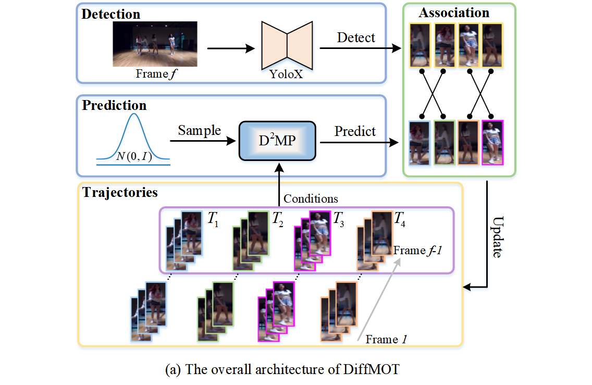
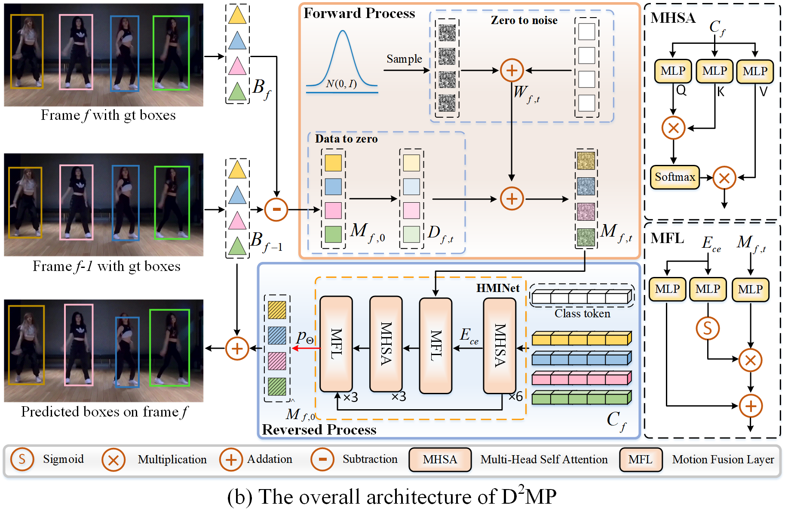

In Multiple Object Tracking, objects often exhibit non-linear motion of acceleration and deceleration, with irregular direction changes. Tacking-by-detection (TBD) with Kalman Filter motion prediction works well in pedestrian-dominant scenarios but falls short in complex situations when multiple objects perform non-linear and diverse motion simultaneously. To tackle the complex non-linear motion, we propose a real-time diffusion-based MOT approach named DiffMOT. Specifically, for the motion predictor component, we propose a novel Decoupled Diffusion-based Motion Predictor. It models the entire distribution of various motion presented by the data as a whole. It also predicts an individual object's motion conditioning on an individual's historical motion information. Furthermore, it optimizes the diffusion process with much less sampling steps. As a MOT tracker, the DiffMOT is real-time at 22.7FPS, and also outperforms the state-of-the-art on DanceTrack and SportsMOT datasets with 63.4% and 76.2% in HOTA metrics, respectively. To the best of our knowledge, DiffMOT is the first to introduce a diffusion probabilistic model into the MOT to tackle non-linear motion prediction.
@article{lv2024diffmot,
title={DiffMOT: A Real-time Diffusion-based Multiple Object Tracker with Non-linear Prediction},
author={Lv, Weiyi and Huang, Yuhang and Zhang, Ning and Lin, Ruei-Sung and Han, Mei and Zeng, Dan},
journal={arXiv preprint arXiv:2403.02075},
year={2024}
}